Congruences¶
Some principles can be used to solve congruences are listed below
Common factors principle I
Common factors between the left side, residue, and the modulus can be removed
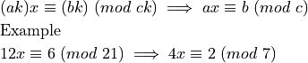
Common factors principle II
After all the common factors have been removed using principle I, we know that the left side and the modulus are relatively prime. Similarly, the residue and the modulus are relatively prime. In that case, any common factors between just the left side and the residue can be removed
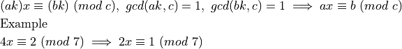
Modulo simplification if possible
 and
and  in can be replaced with any equivalent numbers modulo
in can be replaced with any equivalent numbers modulo 
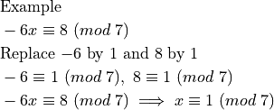
After applying 3., 2. can be checked again.
Finally, the congruence can be solved by trying out remainders
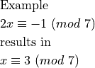
Diophantine Equations¶
A Diophantine equation can be converted into an equivalent congruence and solved
We will assume that a solution exists. We won’t check for the existence of a solution.
can be written as 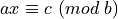 or 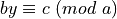
can be written as or 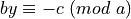
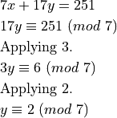
This means 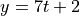 where  is any integer. Plugging this back in the original equation
is any integer. Plugging this back in the original equation
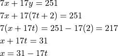
Solving simultaneous congruences¶
First, solve each congruence using the technique specified above
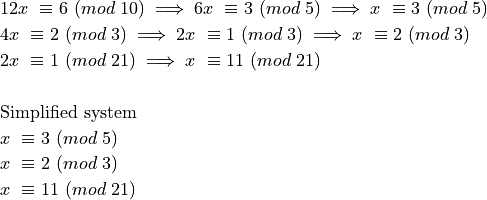
The solution is going to be modulo the lcm of the three modulos.
Start with largest modulo and list out the residues modulo the lcm
Now consider the second larget modulo and retain only the compatible residues modulo the lcm
This result satisfies the thrid congruence in the system 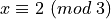 and nothing further needs to be done. If, instead, we had more than one residues in this step, the final congruence would have been used to select the compatible single residue from the set.